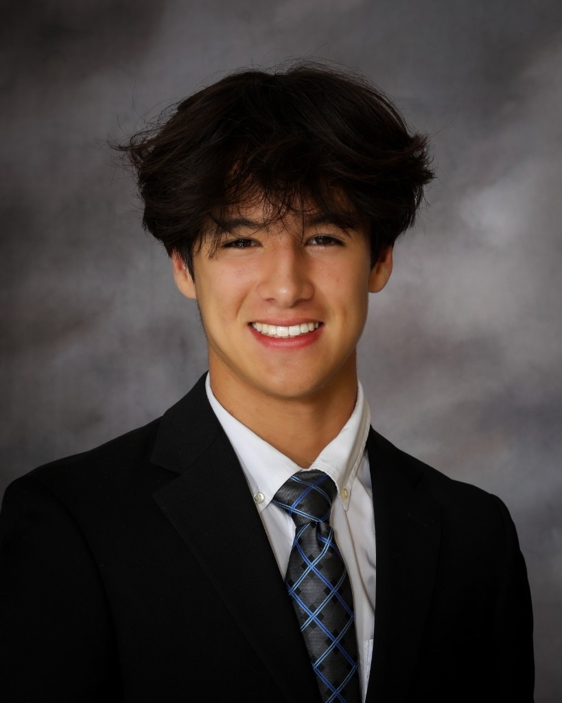

Hi! I'm Austin, a Data Science undergrad at UC San Diego (class of 2028). I work on recommender systems and ML infrastructure — currently a Data Science Intern at Meshy AI, where I helped launch a recommendation feed used by 12M people. This site collects my projects, resume, and contact info.